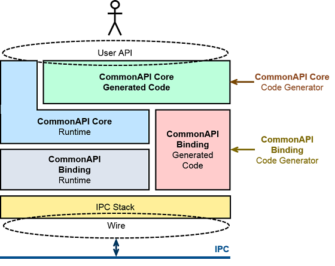
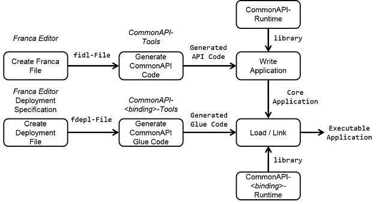

Welcome to CommonAPI C++!
CommonAPI C++ is a C++ framework for interprocess and network communication. The basic objective is not to provide a new mechanism for interprocess or network communication (IPC), but to define a high-level C++ API, which can be used for different mechanisms. The benefit for C++ developers should be that they are relieved from details of proprietary or little-known communication frameworks or protocols.
So that the application can be independent of the used IPC mechanism CommonAPI C++ consists of a core component which provides the API for the application and a component which is specific for the IPC mechanism, a so-called _binding_. Each of these two basic components is again divided into a generic part which provides standard functions for initialization, logging and so on (_runtime_ environment) and an application specific part. This application specific part must be generated from the logical definition of the application interface which is done with the interface description language Franca IDL (see https://github.com/franca/franca[FrancaIDL]).
The basic procedure is that you define an interface for your service with the platform- and programming-language-independent Franca IDL. Then you generate proxy- and stub-code with the CommonAPI code generator (CommonAPI-Tools). After that implement the stub functions by using the function bodies as they are generated and then implement the client by calling these functions by using the generated proxy. To get executable applications (client and service) generate IPC framework specific code (glue-code) with the binding specific code generator (at the moment there is one for D-Bus and for SOME/IP, see details in the provided documentation). At the end compile it together with the provided runtime libraries (for CommonAPI itself and again a binding specific library, for details see again the provided documentation).
If you are new to CommonAPI C++ please start by reading the tutorial (see link below in the download section) and looking at the examples. The source code can be found in the CommonAPI-Tools repository. Even easier are the introductions in the Wikis (see also link below).
Basic Features
- Interface description with the easy to learn, human-readable FrancaIDL.
- Support of Franca features as inheritance, polymorphic structs, unions.
- Code generation for clear and not too complex C++ code.
- Actual support for D-Bus (http://www.freedesktop.org/wiki/Software/dbus/) and SOME/IP (see http://some-ip.com/).
- High-performance implementation by using C++ templates (runtime-performance).
- Highly configurable for the integration on different platforms (e.g. main-loop support, support of Franca deployment files).
- Multithreading support (thread-safe).
Links
- CommonAPI C++ runtime: https://github.com/GENIVI/capicxx-core-runtime/
- Eclipse update-site: http://genivi.github.io/capicxx-core-tools/updatesite/
- Wiki page: https://github.com/GENIVI/capicxx-core-tools/wiki/
- Overview repositories: https://github.com/orgs/GENIVI/teams/someip/repositories/
Bindings
- CommonAPI C++ D-Bus binding: http://genivi.github.io/capicxx-dbus-tools/
- CommonAPI C++ SOME/IP binding: http://genivi.github.io/capicxx-someip-tools/